Quatro correções, todas medidas antes de mexer e depois de mexer:
a lista de participantes deixou de rolar por dentro do cartão (a régua virou a
da coluna, não a da janela), o campo “Próxima ação” voltou a ser
visível — sozinho, sem as quatro células que repetiam os indicadores —, o
ladrilho “Encerrar rodada” recuperou a segunda linha, e o cinza do botão
desabilitado passou o teto AA (2,40 → 5,04). Sondas
tmp/qa/sonda-visual-sala.mjs e tmp/qa/sonda-lac06-estados.mjs,
painel em processo, banco de memória, 20/09/2026.
1. A lista de participantes: a régua é a da coluna
1440×900 — antes — a coluna de 637 px com uma tabela de
609 px rolando por dentro do cartão: a coluna de ações ficava fora da vista.
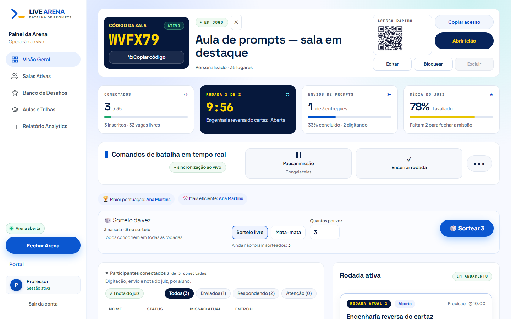
1440×900 — depois — lista de linhas: nome e hora da entrada na
primeira linha, um selo por linha, ações por último. Sem rolagem por dentro.
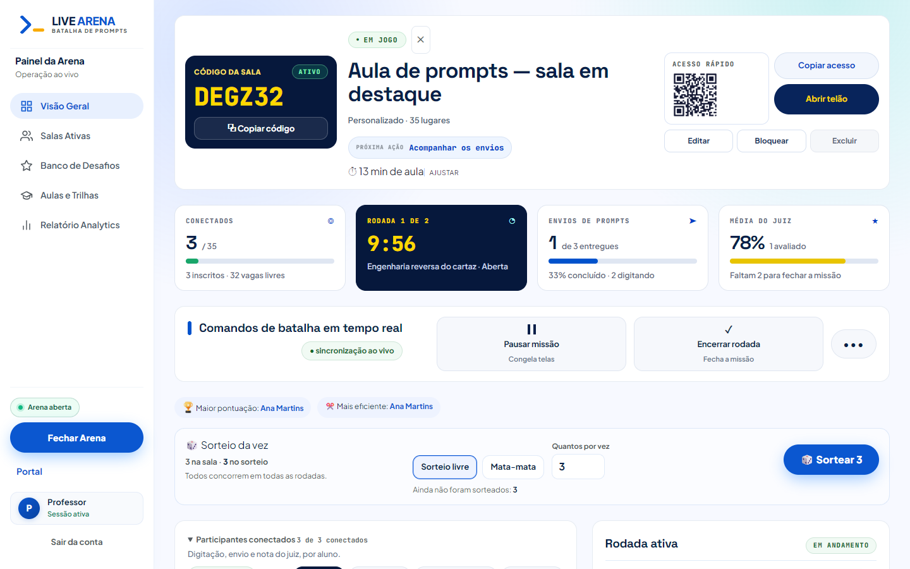
1280×720 — antes — coluna de 545 px, o mesmo defeito, menor.
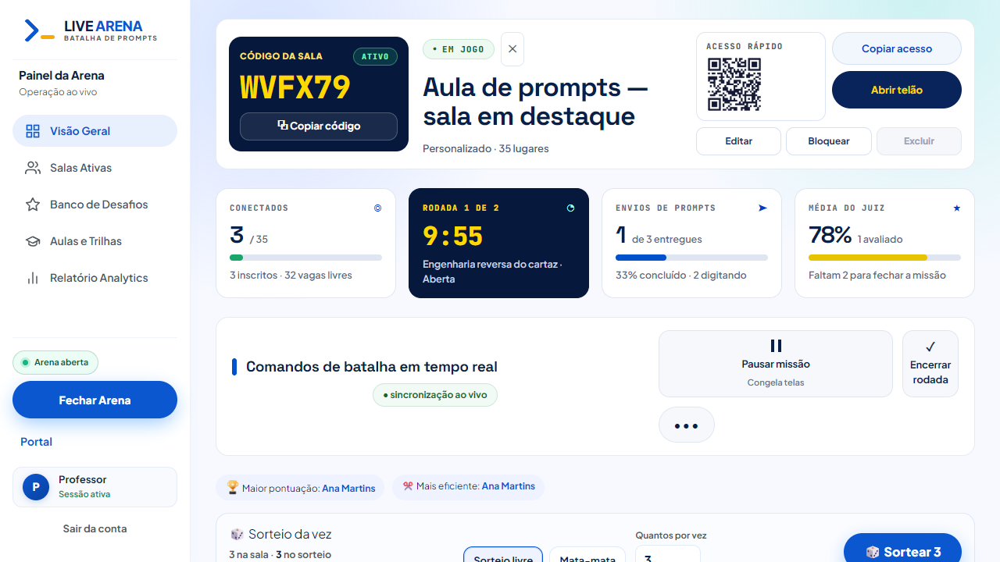
1280×720 — depois
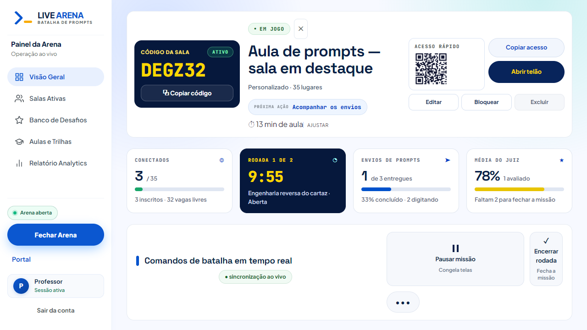
1920×1080 — a coluna de 813 px comporta a tabela: ela continua
tabela, como na referência. Nada mudou aqui.
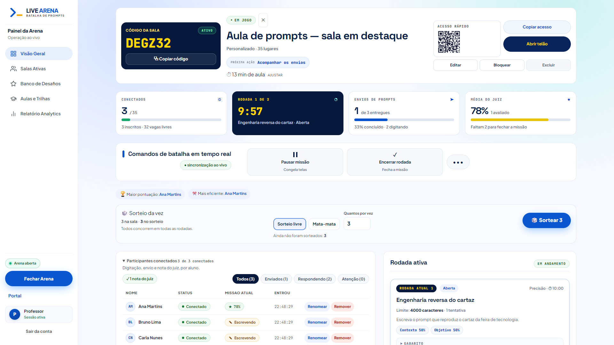
390×844 — uma coluna, e a lista continua lista.
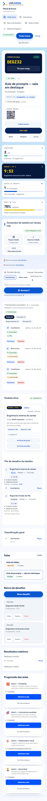
2. Os nove estados do plano
01 · Rascunho — pílula “Abrir sala”; a gestão (Editar,
Bloquear, Excluir) visível; sem código, que ainda não existe.
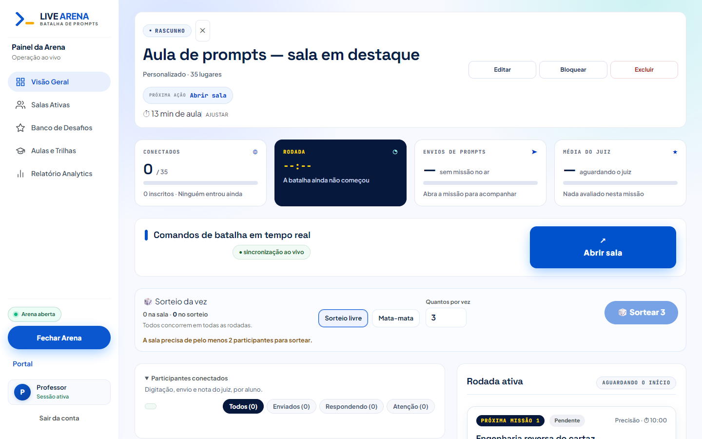
02 · Aguardando participantes — código ativo, “Iniciar
missão” como ação da vez.
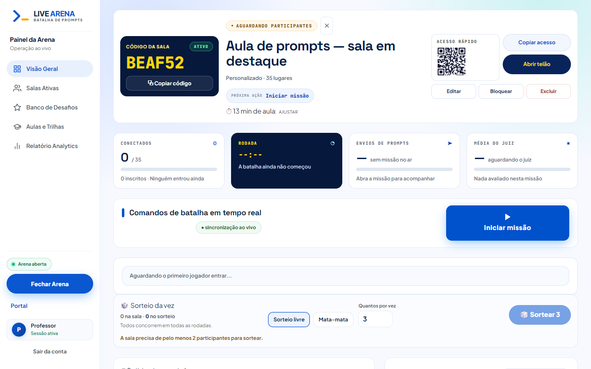
03 · Em jogo, escrevendo — a ação da vez é esperar
(“Acompanhar os envios”): nenhum botão promete o que não há.04 · Em jogo, todos entregaram — a ação da vez passa a
“Encerrar rodada”, e é esse o ladrilho marcado.
06 · Resultados — “Fechar resultados”.07 · Encerrada — o código permanece (a nova batalha reusa a
mesma sala e o mesmo número) e a ação da vez é “Nova batalha nesta sala”.08 · Sem conexão — o último estado válido continua legível e
o selo diz que está reconectando.
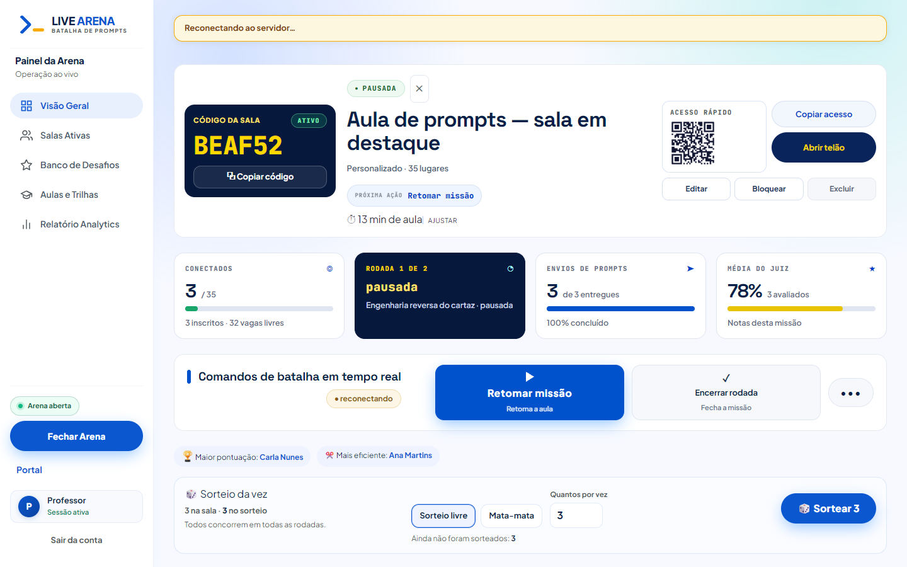
09 · Sala sem missão — uma única próxima ação, sem painel
vazio de informação.
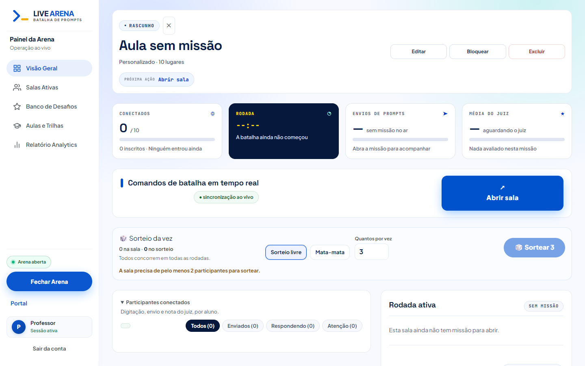
Em jogo, 1024×768 — indicadores em duas colunas, colunas
empilhadas, sem rolagem lateral.
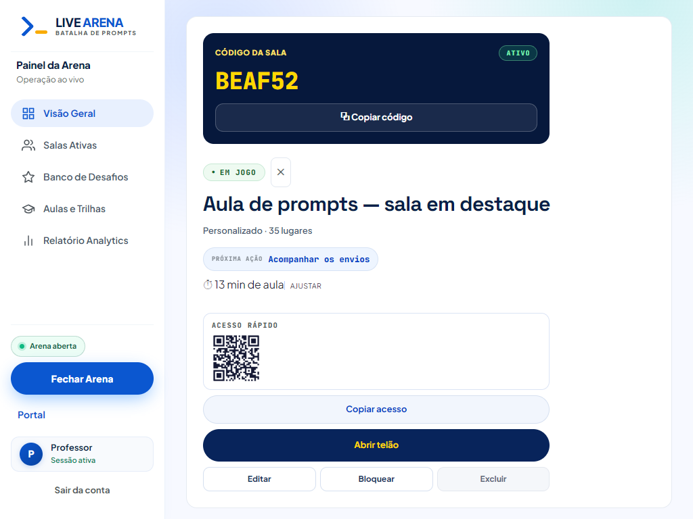
Em jogo, 390×844 — uma coluna na ordem do plano: código,
identidade, acesso, indicadores, comandos, participantes, rodada, fila.